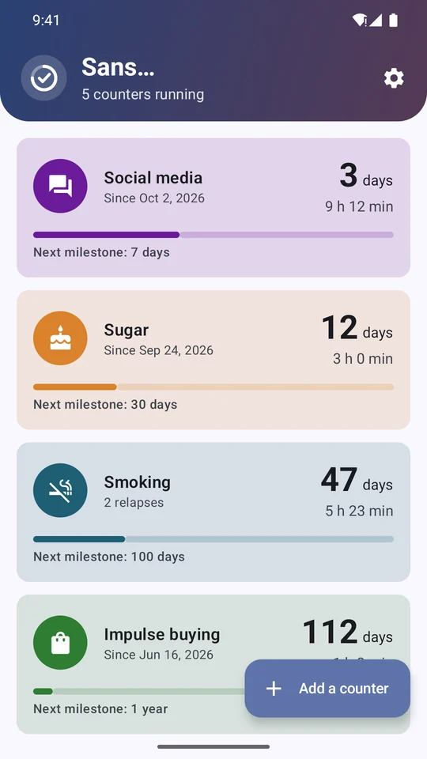
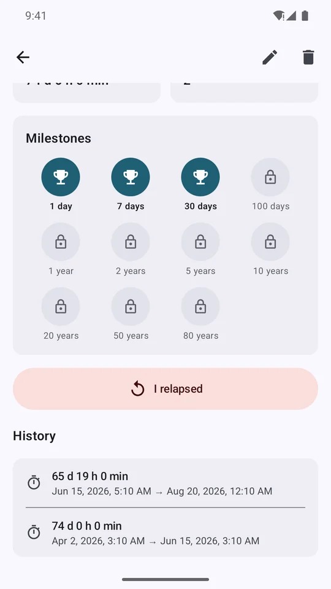
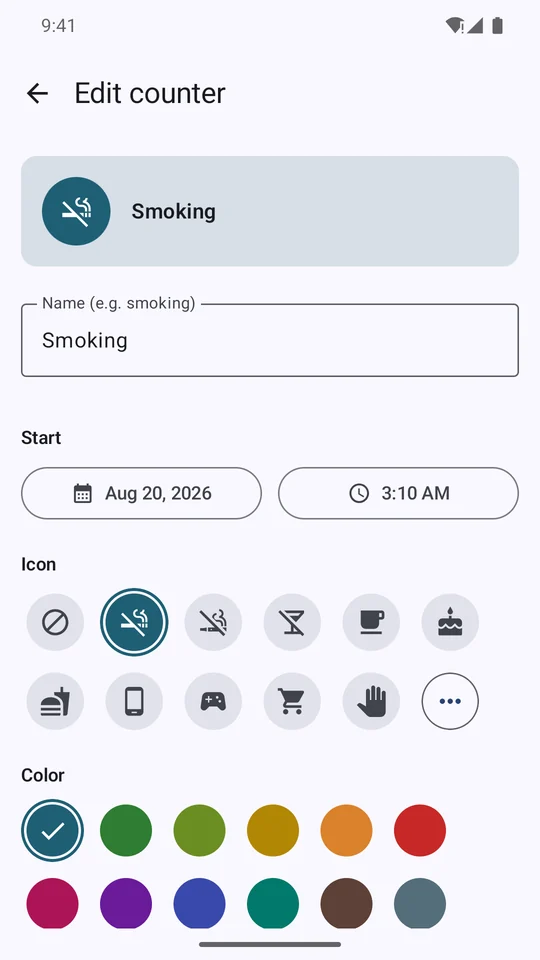
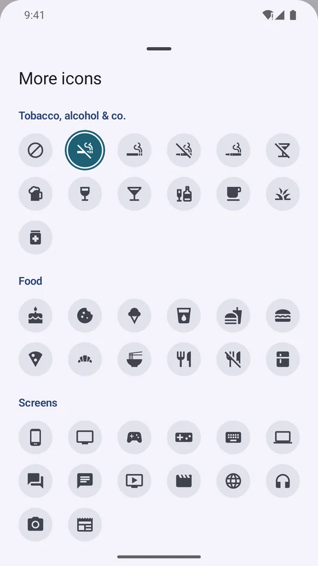
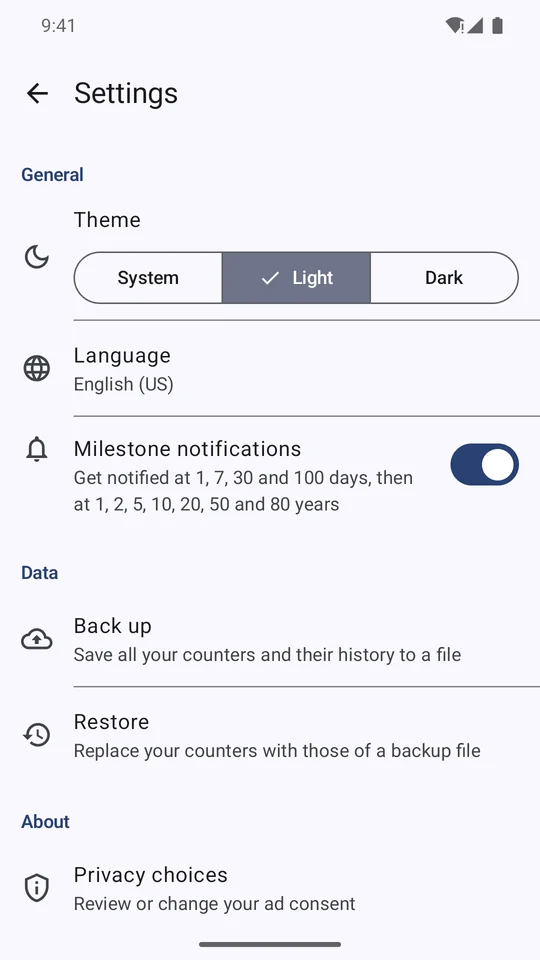
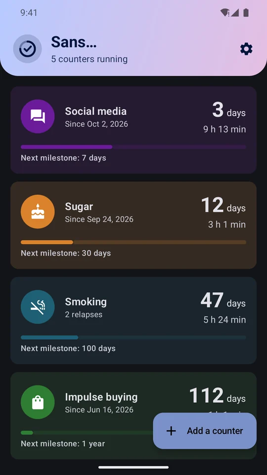

Sans…
Sans…Everything to keep going
Simple every day, motivating in the long run.
Multiple counters
A name, one of 77 icons and a color for each, with the exact start date and time.
Live time
Days, hours, minutes and seconds ticking. Beyond one year: years and days.
Relapse, no judgment
One button resets the counter and keeps the previous streak in your history.
Milestones and badges
1, 7, 30 and 100 days, then 1, 2, 5, 10, 20, 50 and 80 years, with a notification to celebrate each step.
Widget
Keep the counter of your choice on your home screen.
Your way
Light or dark theme, English or French, back up and restore to a file.
Screenshots
Scroll to see the screens.






Your data stays with you
No account, no server: your counters and their history are stored only on your phone.
The app is free thanks to a single banner ad (Google AdMob). No full-screen ads and no ads in the widget.
Sans… is not a medical device and does not replace professional medical advice.